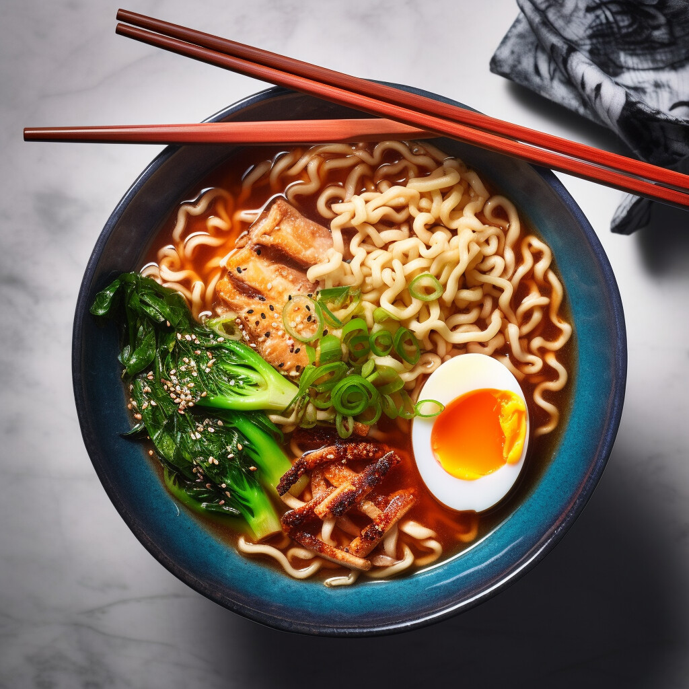
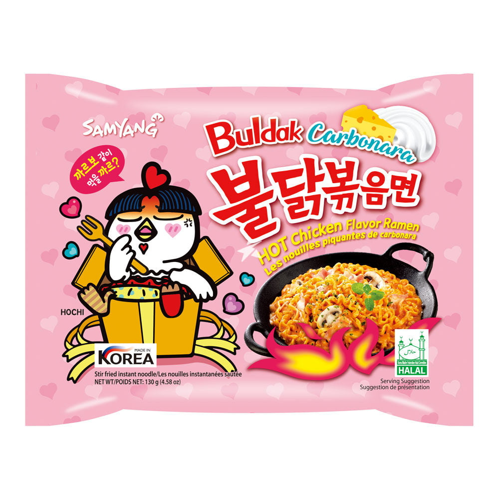
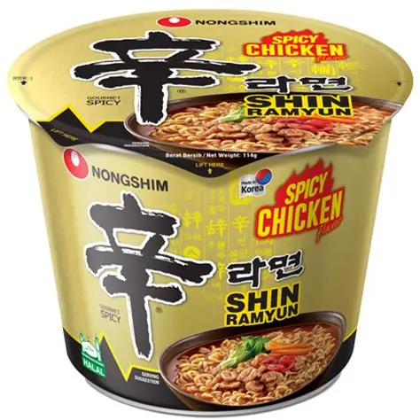
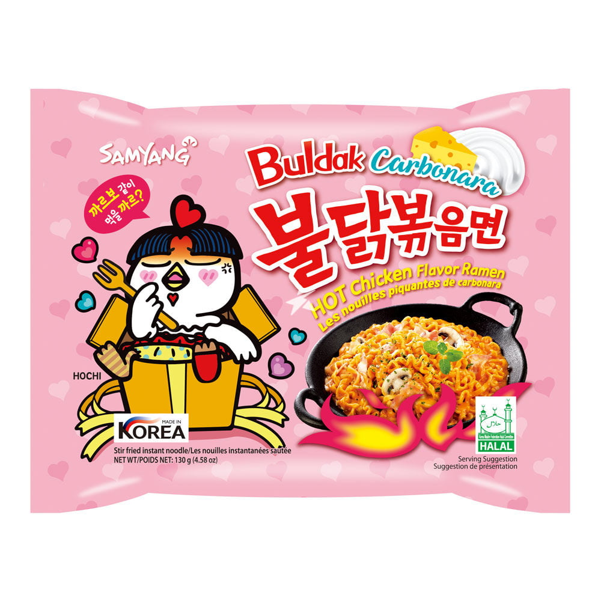
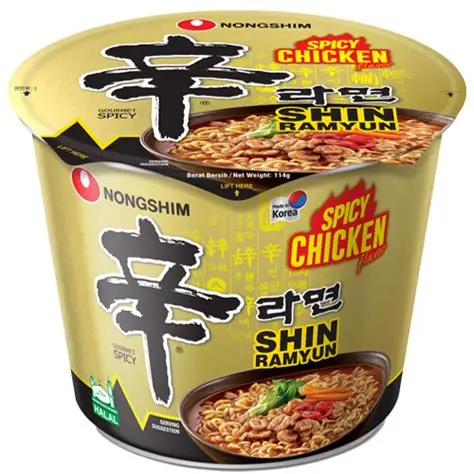
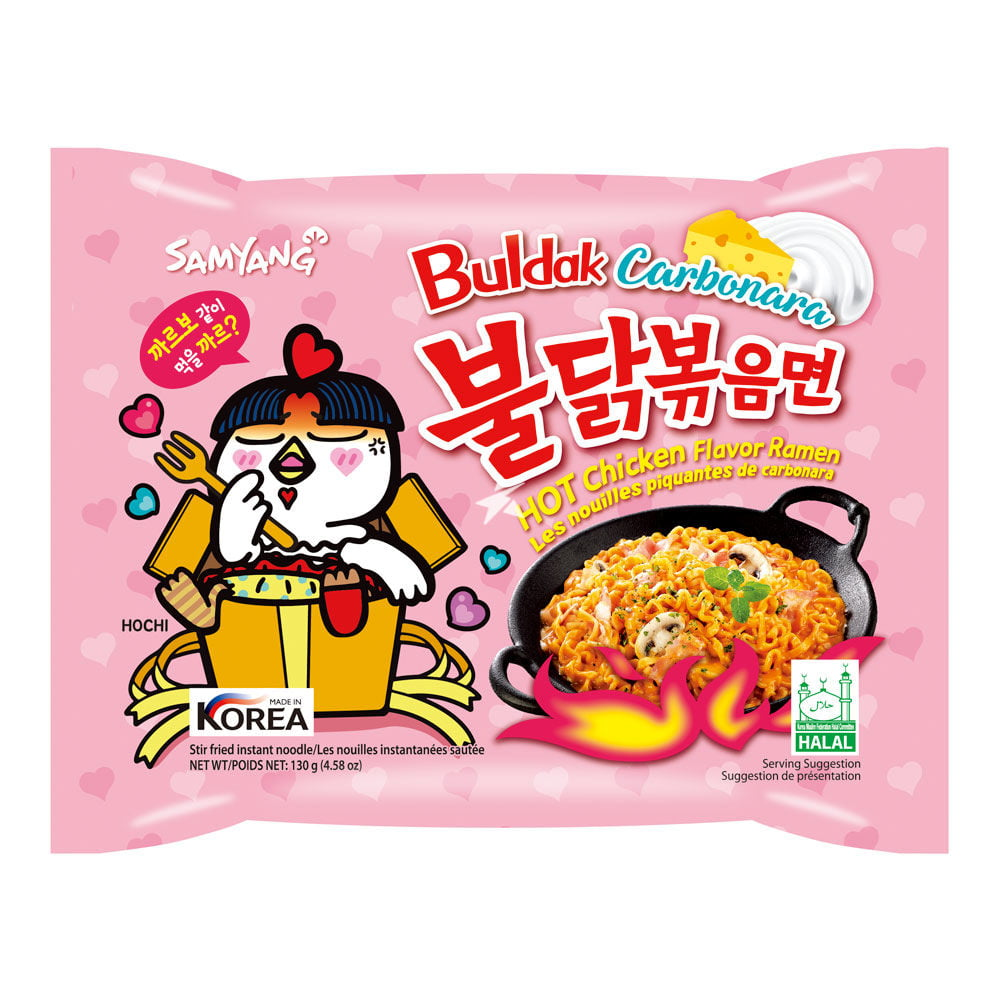
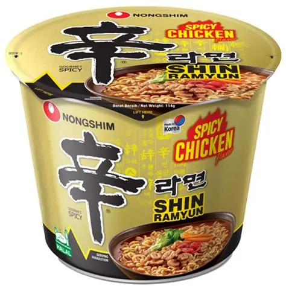

Les Nouilles Instantanées
Accueil
Histoire
Préparation
Bienvenue sur le site des nouilles instantanées!
Sur ce site, apprenez l'histoire de ce plat si simple ainsi que comment le préparer!

Quelques exemples de nouilles instantanées:
 
 


